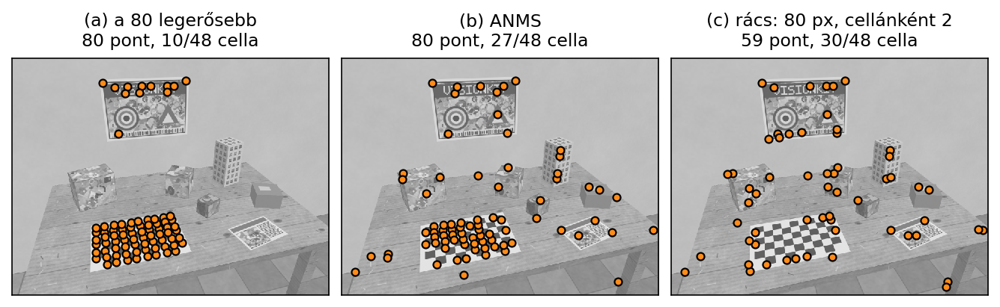
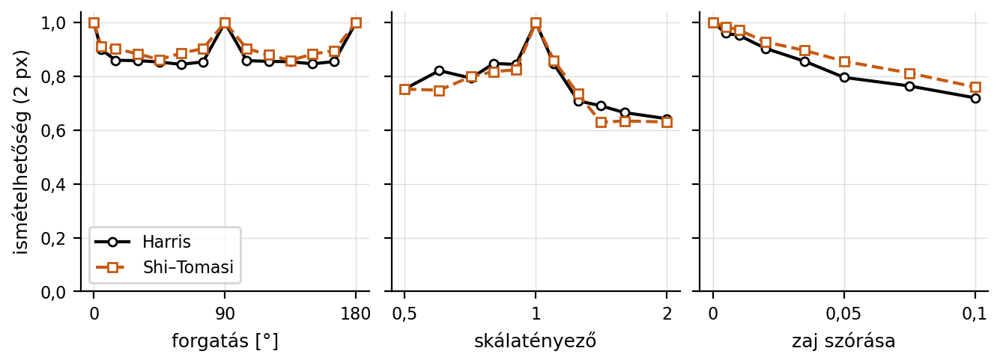

A Zhang-módszer síkbeli mintával
alfejezetben a sakktábla sarkait kerestük meg, de ott tudtuk, hol kell
lenniük. A következő fejezetekben ennyi segítségünk sincs: két képet
kapunk a futó jelenetről, más-más nézőpontból, és ugyanazokat a
jelenetpontokat kell megtalálnunk mindkettőn. Ezekből a
párokból lesz homográfia, alapmátrix, kamerapóz és 3D pontfelhő.
Nem minden pixel alkalmas erre. A fal egyik egyenletes pontjának
ezernyi hasonmása van, az asztal élén lévő pont pedig az él mentén
csúszkálhat anélkül, hogy a környezete változna. Olyan pontot keresünk,
amelynek környezete egyedi a közvetlen szomszédságában,
és amelyet egy másik képen is újra ki lehet választani. Ezek a
jellemzőpontok (keypoint). Ebben az alfejezetben a
legrégebbi és legszemléletesebb fajtájukat, a sarkot
(corner) vezetjük le.
10.1.2 Szemlélet: nézzünk be egy
ablakon
Vágjunk ki a képből egy kis ablakot, toljuk el néhány pixellel, és
mérjük meg, mennyire változott meg a tartalma. Három eset
lehetséges:
sík folt: bármerre toljuk, alig változik
semmi;
él: az élre merőlegesen eltolva nagyot változik, az
él mentén eltolva alig;
sarok: minden irányban jelentősen változik.
Statikus változat (mint a PDF-ben)
A tesztkép három ablaka (A: sík, B: él, C: sarok), a
sajátértéksík a Harris-határokkal, alul az eltolási hiba
a közelítő ellipszissel
Az ábra alsó sora az eltolás függvényében mért hibát mutatja (sötét =
kis változás). Az A ablaknál a hiba mindenhol közel nulla. A B ablaknál
hosszú völgy fut az él irányában. A C ablaknál egyetlen
kis gödör van a
körül: ez a helyzet egyértelmű. A narancs szaggatott görbe egy
ellipszis, amelyet mindjárt levezetünk; a fehér vonal a pontos hiba
ugyanakkora szintvonala. A kettő a
közelében jól egyezik. A jobb felső pontfelhőben minden pont egy-egy
pixel ablakának két sajátértéke; a három terület a sík, az él és a
sarok.
10.1.3 Az eltolási hiba és a
struktúratenzor
Legyen
az ablak a
pixel körül,
egy nemnegatív súlyfüggvény (tipikusan Gauss),
az eltolás. A súlyozott négyzetes eltérés:
Szavakban: mennyire tér el az eltolt ablak az eredetitől, a középhez
közeli pixeleket jobban számítva. Kis eltolásra elsőrendű
Taylor-közelítést írunk:
,
ahol
a Képgradiens és éldetektálás: Sobel és Canny
gradiense. Behelyettesítve és
-t
kiemelve:
Definíció. A
pixel struktúratenzora (structure tensor) a
-es
mátrix
Szavakban: a környék gradienseinek súlyozott „második momentuma”.
Ugyanez a mátrix szerepelt a Zhang-módszer síkbeli
mintával szubpixeles sarokfinomításában.
Három tulajdonsága kell:
szimmetrikus és pozitív szemidefinit, mert
.
Mindkét sajátértéke nemnegatív:
.
Egyetlen pixel tagja,
,
1 rangú. Ablak és súlyozás nélkül
lenne mindenhol, és sosem látnánk sarkot. A sarok a környék
különböző irányú gradienseiből áll össze.
A
szintvonal ellipszis. Féltengelyei a sajátvektorok irányába mutatnak,
hosszuk
.
Nagy sajátérték: rövid tengely, abban az irányban gyorsan nő a hiba.
Közel nulla sajátérték: az ellipszis a végtelenbe nyúlik, ez az él
völgye.
A mátrix elemeit minden pixelre egyszerre számoljuk: kiszámítjuk az
,
,
képeket, és mindhármat Gauss-szűrővel simítjuk (Simítás és zajszűrés: Gauss, medián, bilaterális).
Az eredmény három
tömb.
10.1.4 Sajátértékek: sík, él,
sarok
A
-es
szimmetrikus
sajátértékei zárt alakban írhatók:
Szavakban: az átlós elemek átlaga, plusz-mínusz a
„kiegyensúlyozatlanság” mértéke. A helyi szerkezet:
Szerkezet
Sajátértékek
alakja
sík folt
mindkettő kicsi
lapos
él
egy nagy, egy kicsi
völgy az él mentén
sarok
mindkettő nagy
gödör
Shi–Tomasi-kritérium [S-SHITOMASI94]: a pontszám a
kisebbik sajátérték,
.
Szavakban: a legrosszabb irányban is mekkora a változás. Ez a küszöbölés
a
síkon egyszerű, és a követésben pontosan ez számít: a Lucas–Kanade és piramisos követés (KLT)
elmozdulásbecslése akkor stabil, ha
kisebbik sajátértéke sem kicsi.
Harris-válasz [S-HARRIS88]:
ahol
tipikusan
–.
Szavakban: jutalmazza a szorzatot (mindkettő nagy), és bünteti az
összeget (egyetlen nagy érték). A
és a
miatt nem kell sajátértéket számolni, gyökvonás sem. Az
előjel osztályoz:
nagy értékkel sarok,
él,
sík.
Hol van a határ? Legyen
.
Az
feltételt
-tel
osztva
.
A kisebbik gyök
esetén
:
a Harris-detektor akkor lát sarkot, ha a két sajátérték aránya kisebb
körülbelül
-nál,
a gradiens erősségétől függetlenül. A küszöb
()
ezt egészíti ki egy erősségi feltétellel. Az ábra jobb felső paneljén a
folytonos kék görbe az
,
a pontozott az
,
a fekete szaggatott az
egyenes (a tengelyek
szerint skálázottak).
10.1.4.1 Mire invariáns?
Forgatás. Ha a kép
forgatással elfordul, a gradiensek is:
.
A hasonlósági transzformáció a sajátértékeket nem változtatja, tehát
és
forgásinvariáns (mintavételezett képen csak közelítőleg, az interpoláció
miatt).
Fényesség és kontraszt.
esetén
,
,
.
Az eltolás
()
kiesik. Az
miatt a küszöböt a kép legnagyobb válaszához viszonyítjuk:
.
Skála: nem. A
és
rögzített pixelméretű. Egy lekerekített sarok nagyítva hosszú ívnek
látszik, azaz élnek. Mindjárt megmérjük.
10.1.5 A detektor lépései
A visionkit.features.harris (és a
shi_tomasi) ugyanazt a láncot futtatja:
Gradiens a deriválási skálán. Gauss-simítás
-vel
(alapból
),
majd Sobel. A
a zaj ellen véd.
Struktúratenzor az integrálási skálán. A három
szorzatkép Gauss-simítása
-vel
(alapból
).
A
mondja meg, mekkora környezetből gyűjtünk irányokat;
szokásos.
Válasz és küszöb:
(alapból
,
Shi–Tomasinál
).
Nem-maximum elnyomás. A Képgradiens és éldetektálás: Sobel és Canny elve
két dimenzióban: csak az a jelölt marad, amely a
ablakában a legnagyobb (alapból
).
Az egyenlő értékű szomszédos pixelek (platók) közül egy marad.
Szubpixeles finomítás. A
környezetre másodfokú felületet illesztünk, és a csúcsára ugrunk. Egy
dimenzióban, az
,
,
szomszédos értékekkel
Szavakban: a három ponton átmenő parabola csúcsának eltolása a
középső pixelhez képest, mindig
,
ha
a legnagyobb. Két dimenzióban
,
ahol
az
numerikus Hesse-mátrixa.
10.1.5.1 Egyenletes eloszlás
A geometriai becslés jobban kondicionált, ha a pontok az egész képet
lefedik. A legerősebb sarkok viszont gyakran egy foltban torlódnak
(nálunk a sakktáblán).

A 80 legerősebb sarok, az adaptív nem-maximum elnyomás és a
rácsos válogatás; a címben a pontot kapó 80 pixeles cellák
száma
Az ANMS (adaptive non-maximal suppression,
features.anms) minden ponthoz kiszámítja a legközelebbi
lényegesen erősebb pont
()
távolságát, és a legnagyobb sugarú
pontot tartja meg. Így egy gyengébb, de magányos pont is bejut.
A rácsos válogatás
(features.grid_select) cellánként a néhány legerősebbet
veszi. Olcsó és gyakori valós idejű rendszerekben; az üres cellákból
viszont nem lesz pont, ezért az (c) esetben 80 helyett csak 59
maradt.
A 48 cellából a legerősebbek 10-et, az ANMS 27-et, a rács 30-at fed
le.
10.1.6 Mennyire ismétlődnek meg a
sarkok?
Egy detektor annyit ér, amennyire egy másik képen
ugyanazokat a jelenetpontokat találja meg.
Definíció. Ismert
homográfiával
()
az ismételhetőség (repeatability) a megismételt pontok
száma osztva
-vel,
ahol
,
a mindkét képen látható tartományba eső pontok száma. Egy pont
ismétlődik, ha a
-val
átvitt helyétől legfeljebb
pixelre van egy detektált pont; a párosítás egy-egyértelmű
(features.repeatability).
Itt a „mérj alapigazsággal” mintát követjük: a második képet mi
állítjuk elő a futó jelenet képéből forgatással, skálázással
(kicsinyítés előtt előszűréssel, Átméretezés,
interpoláció és aliasing) és zajjal, így a
pontosan ismert.

A Harris- és a Shi–Tomasi-detektor ismételhetősége a
forgatás, a skálatényező és a zaj függvényében (250 pont,
pixel)
Forgatás:
–,
a
többszöröseinél pontosan
.
Ott a pixelrács önmagára képződik; máshol az interpoláció kissé elmossa
a képet, ezért esik ki néhány pont. A Összehasonlításul: két véletlen
ponthalmaz ugyanezzel a mérőszámmal csak
-t
ér el.
Skála:
–
nagyításnál
–.
Nem zuhan nullára, mert a jelenet sok sarka (például a sakktábla
kereszteződései) minden méretarányban sarok.
Zaj: fokozatos romlás; a Shi–Tomasi itt végig kissé
jobb.
A skálafüggés a saját mérettel bíró szerkezeteken látszik igazán. Egy
-os
négyzet
pixel sugárra lekerekített sarkán a legnagyobb Harris-válasz a hegyes
saroknak mindössze
%-a,
pixel sugárnál pedig egyáltalán nincs pozitív válasz. Nyolcad méretre
kicsinyítve ugyanez a lekerekítés újra erős sarok (a lenti kód
számolja). A megoldás a skála keresése: ez a Skálainvariáns detektálás: LoG, DoG és a SIFT elve
témája.
Egy
-ös
képen
,
ha
és
(jobb alsó negyed világos), különben
.
Az egyszerűség kedvéért központi differenciával deriválunk, és a középső
ablakot egyenletes,
súllyal összegezzük.
Az
értékei a
sorokban és az
oszlopokban:
,
.
Az
szorzat csak ott nem nulla, ahol mindkettő nem nulla: egyedül a középső
pixelen, tehát
.
Sarok:
,
a Shi–Tomasi-pontszám
.
Az ellipszis tengelyei az
és
átlók irányába mutatnak.
Él
(,
ha
):
az
oszlopokban, mindhárom sorban,
.
Így
,
,
.
Sík foltban
,
.
Szubpixel. Ha egy sorban
,
,
,
akkor
:
a csúcs a nagyobb szomszéd felé tolódik.
10.1.8 Kód
A kézi példa NumPy-ban (a np.gradient a belső pixeleken
központi differencia):
import numpy as npfrom visionkit import features, geometry, filters, scenev, u = np.mgrid[0:5, 0:5]for name, img in [("sarok", ((u >=2) & (v >=2)) *1.0), ("él", (u >=2) *1.0)]: iv, iu = np.gradient(img) gu, gv = iu[1:4, 1:4].ravel(), iv[1:4, 1:4].ravel() M = np.array([[gu @ gu, gu @ gv], [gv @ gu, gv @ gv]]) lmin, lmax = features.eigenvalues_2x2(M[0, 0], M[0, 1], M[1, 1]) R = np.linalg.det(M) -0.05* np.trace(M) **2print(f"{name}: M = {M.tolist()}, λ = ({lmin:.2f}; {lmax:.2f}), R = {R:.4f}")
sarok: M = [[1.0, 0.25], [0.25, 1.0]], λ = (0.75; 1.25), R = 0.7375
él: M = [[1.5, 0.0], [0.0, 0.0]], λ = (0.00; 1.50), R = -0.1125
Most a futó jelenet. A detektor Keypoints objektumot ad
(pozíció, válasz, skála), a pontok a válasz szerint csökkenő sorrendben
jönnek.
A futó jelenet Harris-válaszképe (piros: pozitív, sarok;
kék: negatív, él) és a kiválasztott 263 sarok
A válaszkép (a gyenge értékek láthatóságához negyedik gyök alatt)
mutatja a három osztályt: a fal fehér, a dobozok és a poszter kerete kék
(él), a textúra és a sakktábla kereszteződései pirosak. A három
legerősebb sarok mind a sakktáblán van, törtrészes koordinátákkal.
Az ismételhetőség mérése:
h, w = img.shapecentre = ((w -1) /2, (h -1) /2)def warped(deg=0.0, s=1.0):"""Forgatott-skálázott kép és a homográfia (kicsinyítés előtt előszűréssel).""" H = geometry.rotation_about(np.radians(deg), centre, s) src = img if s >=1else filters.gaussian(img, 0.5* np.sqrt(1/ s **2-1))return geometry.warp(src, H, img.shape, border="nearest"), Hbase = features.harris(img, 250)for deg, s in [(30, 1.0), (90, 1.0), (0, 0.5), (0, 2.0)]: out, H = warped(deg, s) r = features.repeatability(base, features.harris(out, 250), H, out.shape, tol=2.0, shape1=img.shape)print(f"forgatás {deg:2d}°, skála {s}: {r['n_repeated']:3d} / "f"min({r['n1']}, {r['n2']}) = {r['repeatability']:.3f}")
Figyeld a nevezőt: félméretben csak 85 sarok keletkezik, és az arány
ezekhez viszonyít. A
mögött ezért csak 64 közös pont van a 250-ből: az ismételhetőség mellé
mindig nézd meg a darabszámot is.
Végül a lekerekített sarok. A
-as
képen egy
-os
világos négyzet van,
sugarú lekerekítéssel:
def rounded_square(r, n=160, half=48, ss=4): v, u = (np.mgrid[0:n * ss, 0:n * ss] +0.5) / ss -0.5- (n -1) /2 qu, qv = np.abs(u) - (half - r), np.abs(v) - (half - r) d = (np.hypot(np.maximum(qu, 0), np.maximum(qv, 0)) # előjeles távolság+ np.minimum(np.maximum(qu, qv), 0) - r)return np.where(d <0, 0.8, 0.2).reshape(n, ss, n, ss).mean(axis=(1, 3))for r in (0, 4, 8, 16): big = rounded_square(r) small = features.resize_bilinear(big, 8.0)print(f"r = {r:2d}: R_max = {features.harris_response(big).max():.1e}, "f"1/8 méretben {features.harris_response(small).max():.1e}")
r = 0: R_max = 6.4e-05, 1/8 méretben 4.5e-05
r = 4: R_max = 2.3e-05, 1/8 méretben 4.5e-05
r = 8: R_max = 2.0e-07, 1/8 méretben 4.4e-05
r = 16: R_max = 0.0e+00, 1/8 méretben 3.9e-05
10.1.9 Próbáld ki
Kattints a B: él gombra. A
nagyságrendekkel nagyobb a
-nél
(
és
),
a hibatérképen ferde völgy látszik, az ellipszis a völgy mentén
elnyúlik. Húzd az ablakot a körlap szélére: bárhol is vagy rajta, az
eredmény „él”, csak a völgy iránya fordul.
A C: sarok pontban állítsd
-t
-re.
A
körülbelül
-ról
-ra
esik: a szűk ablak már alig látja egyszerre a két oldalt. Mi történik
nagy
mellett, és miért csökken ekkor mindkét sajátérték?
Állítsd a zajt
-re,
kapcsold be a pixelek jelölését, a
küszöböt pedig állítsd a legkisebbre. A sík foltokon nem jelennek meg
sarokpixelek: a zaj sajátértékei kicsik és az origó közelében
tömörülnek. Az A pontban a két sajátérték hasonló nagyságú, miért?
A C pontban emeld
-t
-re.
A válasz negatívba fordul, a döntés „él”, és a négyzet sarkai eltűnnek a
jelölésből. Ellenőrizd a
feltétellel, mekkora
felett nem sarok a C pont
().
10.1.10 Tipikus hibák
Tünet: a válasz mindenhol
.
Ok: a struktúratenzort pixelenként, ablak (integrálás)
nélkül számoltad, így
.
Javítás: a három szorzatképet kell
simítani, nem a gradienst a szorzás előtt.
Tünet: egyenletes vagy csak köríveket tartalmazó
képen is jönnek „sarkok”. Ok: a relatív küszöb
()
mindig talál valamit, ha van akármilyen kicsi pozitív válasz.
Javítás: abszolút alsó küszöb is kell, vagy ellenőrizd
nagyságrendjét.
Tünet: ugyanaz a küszöb az egyik képen semmit, a
másikon ezreket ad. Ok:
a kontraszt negyedik hatványával skálázódik, és uint8 képen
-szeres.
Javítás: a képet
tartományú float64-ben dolgozd fel, és relatív küszöböt
használj.
Tünet: a sarkok egy foltban torlódnak, a homográfia
a kép többi részén pontatlan. Ok: csak a legerősebb
pontot tartottad meg. Javítás: rácsos válogatás vagy
ANMS.
Tünet: a pontok sor–oszlop felcserélve jelennek
meg. Ok:np.nonzero(v, u)
sorrendet ad. Javítás: a kulcspont (u, v);
a visionkit mindig így tárolja.
Tünet: a sarok hibája a nagyított képen nagy.
Ok: a detektor egyetlen skálán dolgozik.
Javítás: piramis vagy skálatér (Gauss- és Laplace-piramis, skálatér).
10.1.11 Önellenőrzés
Miért pozitív szemidefinit a struktúratenzor?
Mit jelent az
völgye az élnél a sajátértékek nyelvén?
Miért kényelmesebb a Harris-válasz, mint a sajátértékek
kiszámítása?
Mi a deriválási és az integrálási skála szerepe?
Miért forgásinvariáns a sarokválasz, és miért nem
skálainvariáns?
10.1.12 Feladatok
(A) Számold ki
,
,
()
és a Shi–Tomasi- pontszám értékét az
mátrixra. Sarok-e?
(A) Egy képen a kontrasztot a felére csökkentjük
().
Hányszorosára változik
,
a Shi–Tomasi-pontszám, és a relatív küszöbbel talált pontok
halmaza?
(B) Vezesd le, hogy
esetén
minden pozitív szemidefinit
-re.
Mit jelent ez a detektorra?
(B) Mutasd meg, hogy a parabolaillesztés
eltolása
,
ha
és
(és nem mindhárom egyenlő).
(C, programozó) Mérd meg a Harris-detektor
ismételhetőségét
-os
forgatás mellett
integrálási skálákkal,
és
pixel tűréssel. Melyik beállítás a legjobb, és mit árul el a két tűrés
különbsége?
(C) Egy teljesen egyenes élen a zaj miatt
nem nulla. Fehér, pixelenként független
szórású zajnál mekkora a
várható értékének nagyságrendje központi differenciás deriválásnál
(simítás nélkül)?
10.1.13 Rövid összefoglaló
A kis ablak eltolásakor keletkező hiba
,
ahol
a struktúratenzor (pozitív szemidefinit, egy pixelből 1 rangú). Két kis
sajátérték sík foltot, egy nagy élt, két nagy sarkot jelez. A
Harris-válasz
,
a Shi–Tomasi-pontszám
.
A features.harris lánca: simítás, gradiens, ablakozott
szorzatok, küszöb, nem-maximum elnyomás, szubpixeles parabolaillesztés;
az egyenletes eloszlást ANMS vagy rács adja. A sarkok forgásra és
kontrasztváltozásra (relatív küszöbbel) jól ismételhetők, skálára nem
invariánsak: ehhez a skálatérben kell keresni.
10.1.14 Megoldások
,
tehát
,
.
:
sarok (az arány
,
bőven a határ felett). A Shi–Tomasi-pontszám
.
:
a Shi–Tomasi-pontszám negyedére,
tizenhatod részére
()
csökken. A
küszöb ugyanígy skálázódik, ezért a talált pontok halmaza nem változik
(zaj nélkül, kvantálási hatásoktól eltekintve). Abszolút küszöbbel sok
pont elveszne.
A számtani–mértani közép egyenlőtlensége szerint
.
Így
,
ha
.
A detektor ekkor egyetlen sarkot sem talál; a
növelése a kiegyensúlyozottabb sajátértékeket követeli meg.
Legyen
,
,
.
Ekkor
,
és
,
tehát
.
Mivel
,
.
Futtasd:
out, H = warped(30)for si in (0.75, 1.5, 3.0): a = features.harris(img, 250, sigma_i=si) b = features.harris(out, 250, sigma_i=si) reps = [features.repeatability(a, b, H, out.shape, tol=t, shape1=img.shape)["repeatability"]for t in (1.0, 2.0)]print(f"σ_i = {si}: n = {len(a)}, ε = 1: {reps[0]:.3f}, ε = 2: {reps[1]:.3f}")
A nagy ablak itt egyértelműen a legismételhetőbb
(–):
a több pixelből átlagolt struktúratenzor kevésbé függ az
interpolációtól. Cserébe csak
pontot ad (a nagyobb ablak és az NMS kevesebb külön csúcsot hagy). A két
tűrés közti különbség kicsi, vagyis a megtalált pontok
pixelen belül egyeznek. Ez a jelenet sarokban gazdag; más képen a nagy
a közeli sarkokat egybemoshatja, ezért a paramétert mindig saját adaton
mérd. 6. A központi differencia
,
zajának szórásnégyzete
.
Az él menti irányban a valódi derivált nulla, tehát
,
várható értéke normált súlyokkal
.
Például
esetén
.
(A Gauss-simítás ezt erősen csökkenti.) Ezért a küszöbnek a zajszint
felett kell lennie.
10.1.14.1 Válaszok az önellenőrző
kérdésekre
Mert
nemnegatív súlyokkal vett négyzetösszeg.
Az egyik sajátérték közel nulla: a hozzá tartozó sajátvektor (az él
iránya) mentén eltolva a hiba nem nő.
Csak a determináns és a nyom kell, amely az
elemeiből szorzással és összeadással adódik; az előjele közvetlenül
osztályoz.
a gradiens előtti simítás (zajszűrés, milyen finom részletet
deriválunk),
az ablak mérete, amelyből a gradiensirányokat összegyűjtjük.
Forgatásnál
,
a sajátértékek nem változnak. Skálázásnál a rögzített méretű ablak más
mennyiségű szerkezetet lát: nagyítva a lekerekített sarok ívnek, azaz
élnek látszik.